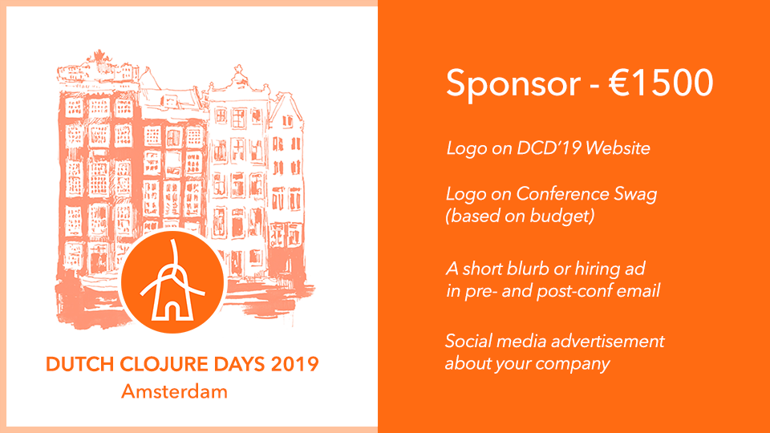
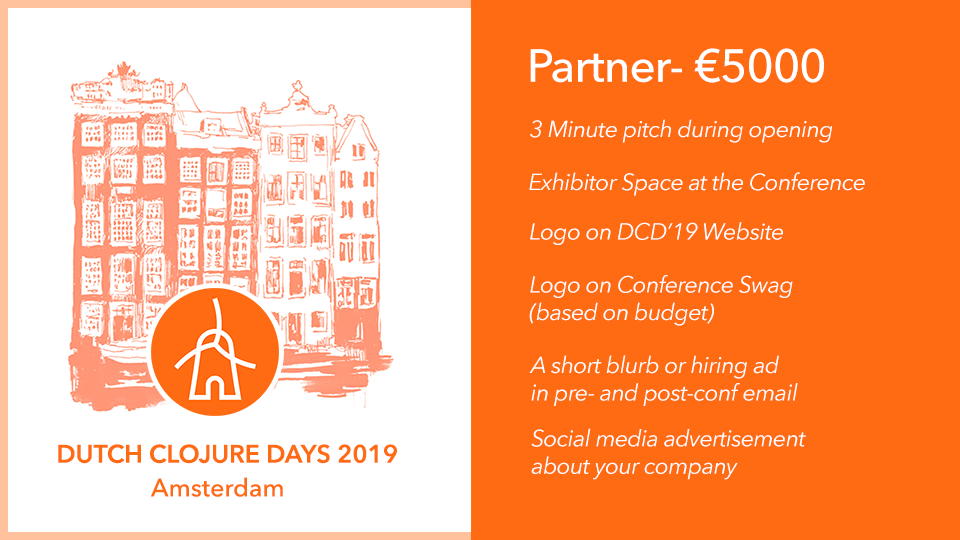

About DCD '19
The Annual International Gathering of Clojure Enthusiasts and Practitioners in the Netherlands!
We welcome you to the 4th edition of our free and non-profit Clojure conference organised by the community, for the community with a full day of amazing talks in a friendly welcoming atmosphere. Reserve your free spot today!
Sponsorship Packages
If you want to support us and Clojure community, consider sponsoring us. Please get in touch via email events@clojuredays.org. We offer two affordable sponsorship packages, check them out:
When?
Dutch Clojure Days will happen on Saturday April 6th, 2019.
Call for Proposals
Our CFP is now closed.
Reserve your Spot
DCD 2019 will be in Amsterdam on Saturday on April 6th, 2019! Get your ticket now!
Agenda
8:30 9:15 | Reception | |
9:15 9:30 | Opening | #DCD18 team |
9:30 10:15 | nREPL Redux | Bozhidar Batsov |
10:25 11:10 | Building BNR Smart Radio & FD.nl Recommender system using Clojure & Serverless Architecture | Bahadir Cambel |
11:20 12:05 | Decentralized evolutionary computation with Clojure and ClojureScript | Rakhim Davletkaliyev |
12:05 13:20 | Lunch | |
13:20 14:05 | How we migrated a complex JavaScript application to ClojureScript step-by-step | Alex King |
| Lightning Talks | ||
14:15 14:30 | Clojure powered services at Finnish Broadcasting Company | Heimo Laukkanen |
14:30 14:45 | Discourje: Automatically validated message exchange patterns in Clojure. | Ruben Hamers |
14:45 15:00 | Re-find: discover functions with spec | Michiel Borkent |
15:00 15:15 | Future boot | Matthew Ratzke |
15:15 15:45 | Coffee break | |
15:45 16:30 | How I Supercharged Learning Clojure through Gamification | Mey Beisaron |
16:40 17:25 | The rise and fall of e2e testing at scale | Phillip Mates |
17:35 18:20 | Growing a biomedical search engine in Clojure | Joël Kuiper |
18:20 18:30 | Closing | #DCD18 team |
18:30 21:30 | Networking/Drinks | |


Speakers
Bozhidar Batsov
nREPL Redux
Bahadir Cambel
Building BNR Smart Radio & FD.nl Recommender system using Clojure & Serverless Architecture
Rakhim Davletkaliyev
Decentralized evolutionary computation with Clojure and ClojureScript
Alex King
How we migrated a complex JavaScript application to ClojureScript step-by-step
Heimo Laukkanen
lightning talkClojure powered services at Finnish Broadcasting Company
Ruben Hamers
lightning talkDiscourje: Automatically validated message exchange patterns in Clojure.
Michiel Borkent
lightning talkRe-find: discover functions with spec
Matthew Ratzke
lightning talkFuture boot
Mey Beisaron
How I Supercharged Learning Clojure through Gamification

The rise and fall of e2e testing at scale
Joël Kuiper
Growing a biomedical search engine in Clojure
Where?
Dutch Clojure Days will take place at the TQ (Singel 542, 1017 AZ Amsterdam).
Code of Conduct
All attendees, speakers, sponsors and volunteers at our conference are required to agree with the following code of conduct. Organisers will enforce this code throughout the event. We expect cooperation from all participants to help ensure a safe environment for everybody.
Need Help?
You can always reach out to us at events@clojuredays.org or on twitter.
The Quick Version
Our conference is dedicated to providing a harassment-free conference experience for everyone, regardless of gender, gender identity and expression, age, sexual orientation, disability, physical appearance, body size, race, ethnicity, religion (or lack thereof), or technology choices. We do not tolerate harassment of conference participants in any form. Sexual language and imagery is not appropriate for any conference venue, including talks, workshops, parties, Twitter and other online media. Conference participants violating these rules may be sanctioned or expelled from the conference without a refund at the discretion of the conference organisers.
The Less Quick Version
Harassment includes offensive verbal comments related to gender, gender identity and expression, age, sexual orientation, disability, physical appearance, body size, race, ethnicity, religion, technology choices, sexual images in public spaces, deliberate intimidation, stalking, following, harassing photography or recording, sustained disruption of talks or other events, inappropriate physical contact, and unwelcome sexual attention.
Participants asked to stop any harassing behavior are expected to comply immediately.
Sponsors are also subject to the anti-harassment policy. In particular, sponsors should not use sexualised images, activities, or other material. Booth staff (including volunteers) should not use sexualised clothing/uniforms/costumes, or otherwise create a sexualised environment.
If a participant engages in harassing behavior, the conference organisers may take any action they deem appropriate, including warning the offender or expulsion from the conference with no refund.
If you are being harassed, notice that someone else is being harassed, or have any other concerns, please contact a member of conference staff immediately. Conference staff can be identified as they'll be wearing branded clothing and/or badges.
Conference staff will be happy to help participants contact hotel/venue security or local law enforcement, provide escorts, or otherwise assist those experiencing harassment to feel safe for the duration of the conference. We value your attendance.
We expect participants to follow these rules at conference and workshop venues and conference-related social events.